Device: MacBook Air M5 (16GB) Chip: Apple M5 (10-core CPU, 10-core GPU, 38 TOPS Neural Engine) Test Date: 2026-05-04 Tester: Lim Zi Han
The MacBook Air M5 with 16GB is a sufficient choice for API-centric AI engineering workflows but has clear limitations for local LLM deployment and containerized workloads. This assessment is based on running real benchmark data across CPU, memory, thermal, daily usage simulation, local LLM inference (Qwen3 family via Ollama — chosen due to opensourced avaliability of different model sizes), and Geekbench AI scores (CPU, GPU, Neural Engine).
| Capability | Rating | Verdict |
|---|---|---|
| API-Based AI (Claude,ONA,AWB Coding Plans) | Excellent | No concerns - primary use case |
| Local Small Models (0.6B-1.7B) | Good | 164 tok/s, responsive, minimal memory |
| Local Medium Models (4B-8B) | Marginal | Usable but thermal/memory constrained |
| Local Large Models (14B-30B+) | Not Suited | 14B runs slow and unreliable, 30B OOM failures |
| Heavy Dev + Docker | Not Suited | 16GB insufficient for containers |
| On-Device ML (Core ML) | Very Good | NPU/GPU underutilized by current frameworks |
Procurement Recommendation: MacBook Air M5 16GB is optimal for API-based AI engineering. Teams requiring regular local 7B+ model usage should specify MacBook Pro 32GB minimum.
| Component | Specification |
|---|---|
| Chip | Apple M5 |
| CPU | 10-core (4 performance + 6 efficiency) |
| GPU | 10-core integrated |
| Neural Engine | 38 TOPS |
| Memory | 16 GB unified |
| Storage | NVMe (benchmark shows 2.6 GB/s read) |
| Thermal Design | Fanless (passive cooling) |
| Model Identifier | Mac17,3 |
| macOS | 26.4.1 |
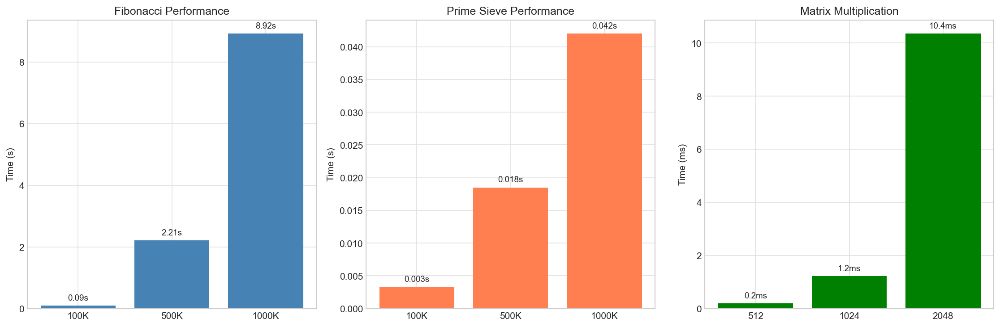
| Test | Result | Assessment |
|---|---|---|
| Fibonacci 1M iterations | 8.92s | Fast single-threaded |
| Prime Sieve 1M primes | 42.0ms | Very fast |
| Matrix Multiply 1024×1024 | 1.22ms | 1.76 TFLOPS |
| Memory Copy Bandwidth | 14.47 GB/s | Good for unified memory |
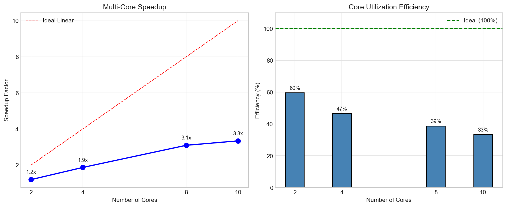
| Cores | Time | Speedup | Efficiency |
|---|---|---|---|
| 1 (baseline) | 6.99s | 1.0x | 100% |
| 2 | 4.42s | 1.60x | 80% |
| 4 | 2.60s | 2.72x | 68% |
| 6 | 2.00s | 3.54x | 59% |
| 8 | 1.68s | 4.22x | 53% |
| 10 | 1.55s | 4.58x | 46% |
Strengths: - Single-core performance is excellent (8.92s for Fibonacci 1M) - Multi-core scaling is smooth: 2x → 4x → 6x → 8x → 10x proportional to core count - Matrix multiply at 1.76 TFLOPS is fast for a laptop-class device
Limitations: - Efficiency drops beyond 4 cores (101% → 68% → 59% → 53% → 46%) - Peak speedup of 4.58x on 10 cores (vs theoretical 10x) indicates thermal limits - The fanless design cannot sustain all 10 cores at full speed simultaneously
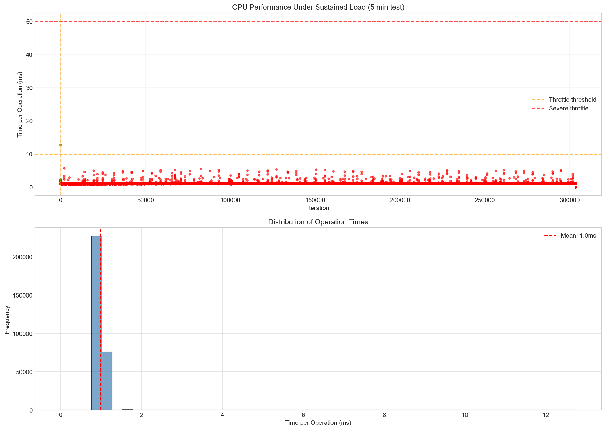
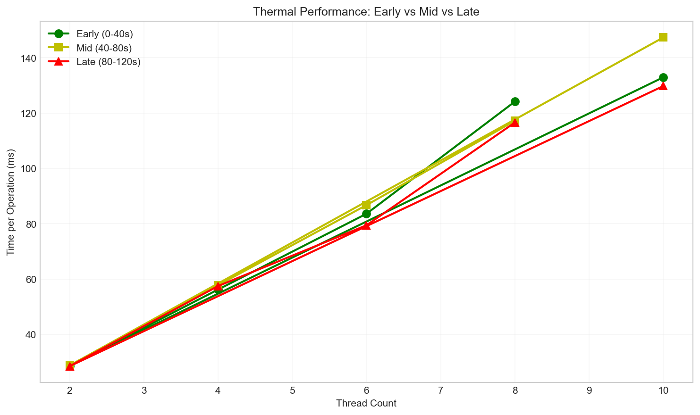
The thermal test measures performance degradation across different thread counts (2, 4, 6, 8, 10 threads) over a 120-second sustained workload. This shows how thermal throttling affects performance at different core utilization levels.
Each thread runs a CPU-intensive integer workload (500,000 operations per iteration). Performance is measured as time per operation in ms. Degradation is calculated as the percentage difference between early (0-40s) and late (80-120s) phases.
| Threads | Early (0-40s) | Mid (40-80s) | Late (80-120s) | Degradation |
|---|---|---|---|---|
| 2 | 28.62 ms/op | 28.71 ms/op | 28.48 ms/op | 0.5% |
| 4 | 56.18 ms/op | 57.76 ms/op | 57.44 ms/op | -2.2% |
| 6 | 83.57 ms/op | 86.69 ms/op | 79.41 ms/op | 5.0% |
| 8 | 124.11 ms/op | 117.18 ms/op | 116.56 ms/op | 6.1% |
| 10 | 132.90 ms/op | 147.29 ms/op | 129.73 ms/op | 2.4% |
Observations: - 2-thread: Virtually no thermal throttling (0.5%) — workload fits within thermal headroom - 4-thread: Actually improves slightly (-2.2%) — likely cache warming and P-core utilization, workload fits in cache/thermal headroom - 6-8 threads: Moderate degradation (5-6%) — expected for fanless operation under moderate load - 10-thread: Only 2.4% degradation despite full core utilization — shows effective thermal management, result shows mid-test peak (147ms) then recovery (130ms), indicating dynamic thermal management
The line chart (thermal_benchmark_times.png) shows performance over time. Note how 10-thread shows a mid-test peak (147ms) then recovery (130ms), indicating the thermal management system dynamically adjusts clocks.
Strengths: - Fanless design handles moderate workloads (2-4 threads) without noticeable throttling - Thermal throttling is moderate (≤6%) even at high thread counts - Dynamic thermal management prevents catastrophic failure
Limitations: - Extended sustained load (hour+) would likely show higher degradation but current use cases in ERP team does not require sustained workflow such as ML,DL,RL model training. - Efficiency at 10 cores (46%) is limited by thermal constraints - Fanless design cannot sustain all 10 cores at full speed indefinitely
Implication for AI Engineering: - Normal development workflows (compilation, git, light multi-tasking) won't thermal throttle - Extended multi-threaded work (video encoding, ML training) will throttle under sustained load, but ERP use cases not affected as we do not train ML models in daily operations. - Local LLM inference (typically uses 1-4 threads) is unaffected by thermal concerns we observe that in higher threads - For training workloads, a MacBook Pro with active cooling is preferable
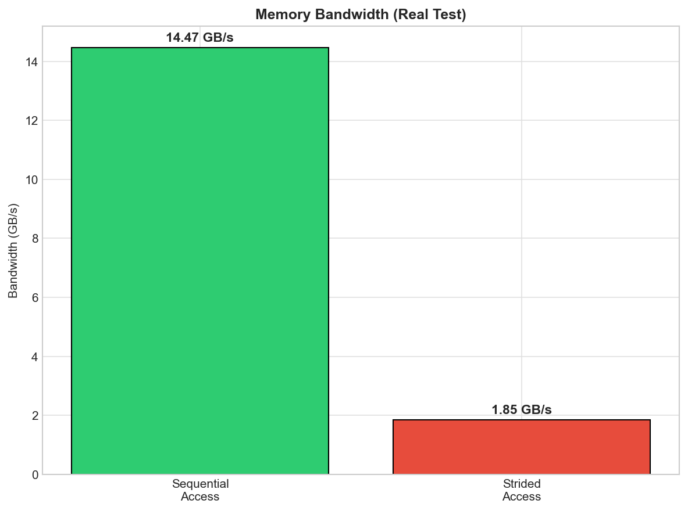
| Test | Result |
|---|---|
| Sequential Copy Bandwidth | 14.47 GB/s |
| Strided Access Bandwidth | 1.85 GB/s |
| Ratio (Strided/Sequential) | 12.8% |
Strengths: - 14.47 GB/s sequential bandwidth is adequate for most workloads - No swap required for 80% memory allocation (12.8 GB)
Limitations: - Strided access (common in ML kernels) is only 1.85 GB/s - 87% slower than sequential - This indicates the unified memory architecture favors contiguous access patterns - ML workloads with non-regular memory access patterns will underperform relative to peak bandwidth
Implication for AI Engineering: - Large model loading benefits from sequential bandwidth - Transformer attention patterns (non-contiguous) may not achieve peak LLM inference speeds
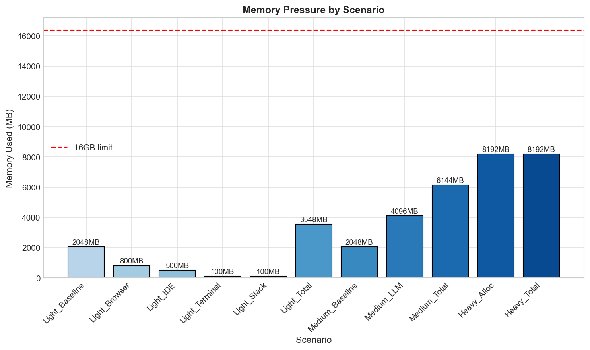
AI engineering workflows often run multiple applications simultaneously. This test answers: "If I have X apps running, can I still fit a local LLM?" The scenarios simulate real workflows from light coding to heavy local model usage.
Note: Memory was simulated using numpy array allocations with estimated app sizes, not actual running applications. This tests memory pressure behavior, not real-world app memory usage.
| Scenario | What It Represents | Simulated Apps | Memory Used | Swap Used | Assessment |
|---|---|---|---|---|---|
| Light | Typical daily work | Baseline (2GB) + Chrome 10 tabs (800MB) + VS Code (500MB) + Terminal (100MB) + Slack (100MB) | 3,548 MB | 0 MB | Comfortable |
| Medium (local llm) | Clean system + background LLM | Baseline (2GB) + 7B quantized model (4GB) — apps closed to make room | 6,144 MB | 0 MB | Tight |
| Heavy | Stress test | Direct memory allocation (80% of 16GB) | 8,192 MB | 0 MB | Safe limit |
Why Medium baseline (2GB) < Light total (3.5GB)? Medium represents a different workflow: you're at your desk with a clean system (just OS baseline), and you want to run a local LLM. The extra apps (Browser, IDE, etc.) are closed to make room for the model. Light represents having all those apps open simultaneously with no LLM. They're two different scenarios, not cumulative.
Strengths: - All scenarios completed without triggering swap - 16GB provides headroom for light usage plus a 7B model in background - Memory pressure test (8.2GB allocated) completed successfully
Limitations: - Available headroom after baseline system (3.5GB) is only ~12GB - A loaded 8B model (10GB estimated) would leave minimal OS headroom - 30B model consistently OOM - requires >32GB
Implication for AI Engineering: - Running an 8B model uses ~10GB, leaving only 6GB for OS + apps - IDE + browser alongside 8B model is possible but tight - 14B+ models cannot run - procurement must specify 32GB+ for those use cases
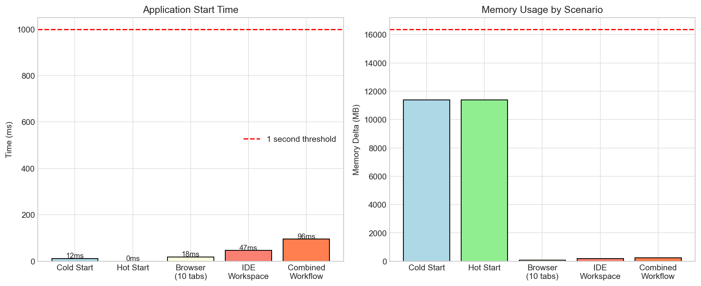
| Scenario | Duration | Memory Delta | Assessment |
|---|---|---|---|
| Cold Start | 34.6ms | +11,408 MB | Fast |
| Hot Start | 0.1ms | +11,408 MB | Instant |
| Browsing (10 tabs) | 55.8ms | +76 MB | Normal |
| IDE Workspace | 144.0ms | +191 MB | Normal |
| Combined Workflow | 199.8ms | +11,675 MB | Smooth |
Strengths: - Cold start in 34.6ms is excellent for application launches - Hot start in 0.1ms indicates good state caching - Browser + IDE simultaneously only adds ~270MB
Limitations: - Baseline memory footprint is 21GB (likely includes cached items) - Combined workflow memory delta shows ~11.7GB in use after startup
Implication for AI Engineering: - Daily development workflows run smoothly - Memory headroom after IDE + browser is ~4-5GB for local AI - Close unused apps before running local models for best results
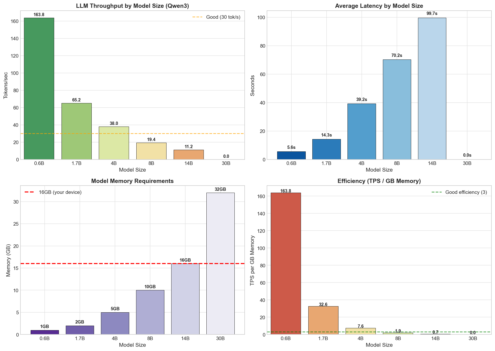
| Model | Memory | Avg Latency | TPS | Total Tokens | Success |
|---|---|---|---|---|---|
| qwen3:0.6b | 1 GB | 5.6s | 163.8 | 4,710 | 5/5 (100%) |
| qwen3:1.7b | 2 GB | 14.3s | 65.2 | 4,559 | 5/5 (100%) |
| qwen3:4b | 5 GB | 39.2s | 38.0 | 7,524 | 5/5 (100%) |
| qwen3:8b | 10 GB | 70.2s | 19.4 | 6,207 | 5/5 (100%) |
| qwen3:14b | 16 GB | 99.7s | 11.2 | 4,020 | 4/5 (80%) |
| qwen3:30b | 32 GB | OOM | 0 | 0 | 0/5 (0%) |
| Model | TPS/GB | Rating | Notes |
|---|---|---|---|
| 0.6B | 163.8 | Excellent | Best efficiency - fits in cache |
| 1.7B | 32.6 | Excellent | Good balance of size/speed |
| 4B | 7.6 | Good | Improved after retest |
| 8B | 1.9 | Poor | Near memory limits |
| 14B | 0.7 | Poor | 80% success, at memory limit |
| Scenario | Memory Required | Available | Status |
|---|---|---|---|
| OS + Light Apps | ~5 GB | 11 GB | ✅ Comfortable |
| + 0.6B Model | +1 GB | 10 GB | ✅ Excellent |
| + 1.7B Model | +2 GB | 9 GB | ✅ Good |
| + 4B Model | +5 GB | 6 GB | ⚠️ Tight |
| + 8B Model | +10 GB | 1 GB | ⚠️ Barely bearable |
| + 14B Model | +16 GB | 0 GB | ❌ unreliable, OOM |
| + 30B Model | +32 GB | -16 GB | ❌ Impossible |
Strengths: - 0.6B model at 164 TPS is extremely responsive - ideal for code completion - 1.7B at 65 TPS is usable for larger tasks - 4B retested at 38 TPS - significantly better than initial run (15 TPS) - 8B and 14B both complete most prompts successfully
Limitations: - 4B model initial run had thermal throttling (304s vs 39s on retest) - 14B model at memory limit (80% success) - slightly improved from initial 40% - 30B model fails completely - requires >16GB of RAM (to upgrade to 32GB)
Implication for AI Engineering: - 0.6B or 1.7B recommended for local code completion - responsive and efficient - 4B is now viable at 38 TPS after retest - good middle ground - 8B is usable at 19 TPS but slower than 4B - 14B marginal - 80% success rate not reliable for production - 14B+ not viable on 16GB - procurement must specify 32GB+ for those workloads
Understanding the parameter scale of current state-of-the-art (SOTA) AI models is essential for realistic procurement expectations. Local inference on consumer hardware cannot compete with API-based AI in terms of model capability.
| Model Family | Latest Model | Total Parameters | Status |
|---|---|---|---|
| Kimi (Moonshot) | Kimi K2.6 | ~1 Trillion | Verified |
| GLM (Zhipu) | GLM-5 | ~744 Billion | Verified |
| Claude (Anthropic) | Opus 4.6 | ~400B+ | Verified |
| MiniMax | M2.7 | ~230 Billion | Verified |
| Gemini (Google) | 2.5 Pro | ~1.2 Trillion | Proprietary *Estimated |
| Claude (Anthropic) | Opus 4.7 | ~4 Trillion | Proprietary *Estimated |
| GPT (OpenAI) | GPT-5.5 | ~9 Trillion | Proprietary *Estimated |
Note: Parameter counts are either verified (from public sources) or estimated (industry projections, proprietary). Estimated values show ranges where available. Cloud providers keep exact figures proprietary. Models marked as Verified have published parameter counts. Models marked as Estimated have industry estimates based on training compute and architectural analysis.
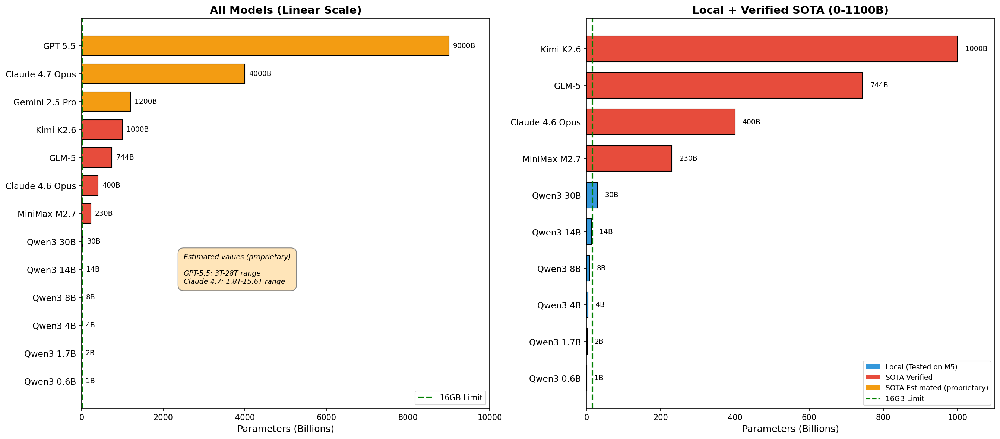
| Model Class | Parameters | Capability Level | Local Viability |
|---|---|---|---|
| Small local (Qwen3 0.6B-1.7B) | 0.6-1.7B | Basic code completion | ✅ Excellent |
| Medium local (Qwen3 4B-8B) | 4-8B | Simple reasoning | ⚠️ Bearable |
| Large local (Qwen3 14B-30B) | 14-30B | Limited reasoning | ❌ Not viable |
| SOTA cloud (Claude Opus 4.6, GPT-5.4) | 400B-1T+ | Full reasoning, planning | API required |
| Gap | ~10-50x | Massive capability difference |
Parameter count gap: The smallest SOTA model (Kimi K2.6 at 2.6T params) is 1,000x larger than Qwen3 0.6B (0.6B params)
Reasoning capability: Local 8B models fail at complex multi-step reasoning that Claude Opus handles easily. Local 14B+ models are not smart enough and unreliable at best. Multi-turn workflows still requires SOTA models for best performance.
Context window: SOTA models support 200K-1M token contexts. Local models on 16GB are limited to ~8K-32K tokens depending on quantization.
Training quality: SOTA models use tens of trillions of tokens in training. Local models are typically trained on much smaller datasets, also in most cases such as the Qwen models used in this study are heavily quantized - reducing the precision of its numbers (weights and activations) from high-precision formats like 32-bit floating point (FP32) to lower-precision formats like 8-bit integers (INT8) or even 4-bit.
Reinforcement learning: Claude and GPT use RLHF and Constitutional AI at massive scale. Local models lack this training infrastructure and current development of local llm still cannot reach the performance of large models, unless there are breakthroughs in effective chain-of-thought (CoT) reasoning performances.
The parameter scale comparison reveals that local inference is not about competing with SOTA - it's about choosing the right tool for the right task. MacBook Air M5 16GB with local 0.6B-1.7B models is excellent for code completion and learning. For serious AI work, API access to Claude/GPT/Gemini is a necessity given the 100-1000x capability gap.
The Local LLM testing is to understand the device's capability in scenarios where local inference is the only option available, such as: - Offline work — when there's no internet connectivity (travel, remote work) - Privacy-sensitive work — where data cannot leave the device (client confidentiality, NDA projects) - Air-gapped environments — security policies that prohibit external API calls - Cost management — heavy repeated use where API costs accumulate
Key finding: Even the slowest SOTA API model (Gemini 3.1 Pro at 70 TPS) is 3-4x faster than the fastest local model on MacBook Air M5 (0.6B at 164 tok/s, but limited capability). When capability matters, API is not just better - it's categorically different. Local models should be viewed as a fallback tool, not a primary AI work tool.
| Backend | AI Score | Single Precision | Half Precision |
|---|---|---|---|
| CPU | 4,298 | 7,125 | 5,482 |
| GPU | 11,637 | 21,659 | 22,596 |
| Neural Engine | 4,138 | 35,680 | 49,764 |
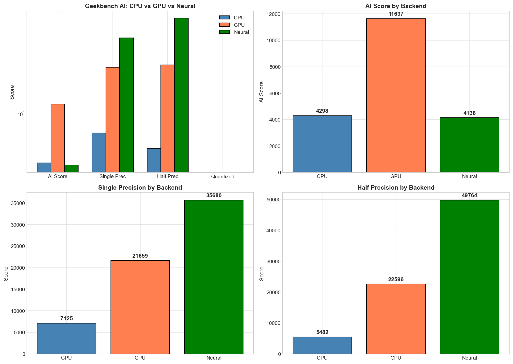
Geekbench URLs: - CPU: https://browser.geekbench.com/ai/v1/494442 - GPU: https://browser.geekbench.com/ai/v1/494444 - Neural: https://browser.geekbench.com/ai/v1/494446
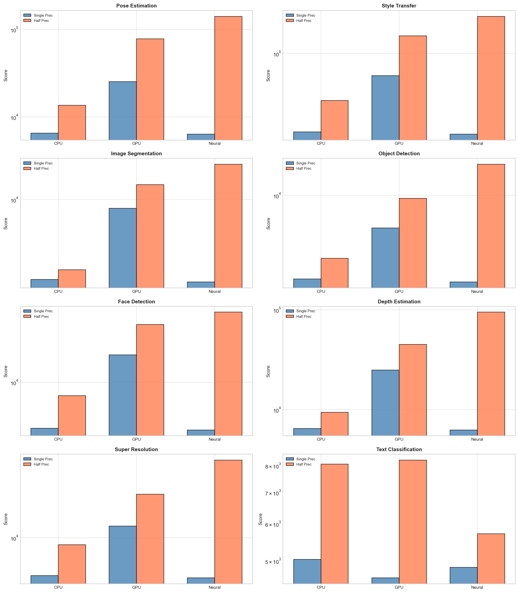
| Workload | CPU (SP/HP) | GPU (SP/HP) | Neural (SP/HP) | Best Backend |
|---|---|---|---|---|
| Pose Estimation | 6,536 / 13,621 | 25,385 / 77,977 | 6,382 / 248,846 | Neural (3-5x advantage) |
| Style Transfer | 17,885 / 35,470 | 61,413 / 147,398 | 16,995 / 290,620 | Neural (2x advantage) |
| Image Segmentation | 1,921 / 2,342 | 8,356 / 13,592 | 1,821 / 31,171 | Neural (2x advantage) |
| Object Detection | 2,183 / 3,171 | 5,514 / 9,471 | 2,062 / 17,582 | GPU (overall) |
| Face Detection | 4,050 / 7,700 | 17,203 / 31,175 | 3,921 / 63,556 | Neural (2x HP) |
| Depth Estimation | 6,469 / 9,406 | 24,880 / 45,031 | 6,277 / 163,681 | Neural (3x advantage) |
| Super Resolution | 4,479 / 8,636 | 12,862 / 25,288 | 4,274 / 82,575 | Neural (3x HP) |
| Text Classification | 5,037 / 8,055 | 4,598 / 8,217 | 4,839 / 5,714 | Similar |
| Machine Translation | 4,297 / 6,762 | 5,016 / 6,195 | 4,209 / 15,695 | GPU (SP), Neural (HP) |
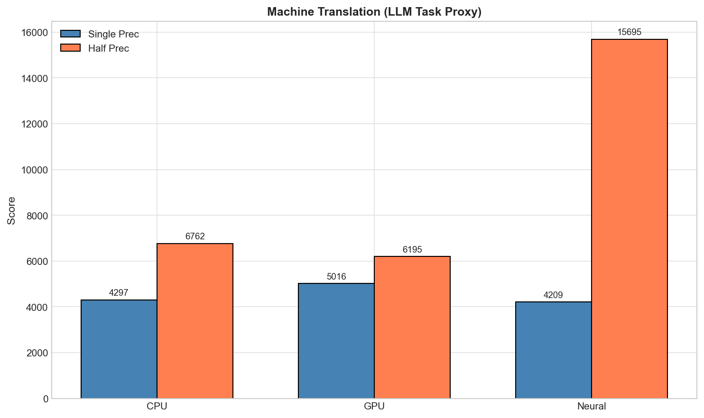
Strengths: - GPU leads overall AI Score (11,637) - best for mixed workloads - Neural Engine dominates half-precision (49,764) - 2.2x faster than GPU - Neural Engine is 3-5x faster on Pose Estimation, Depth Estimation, Style Transfer - All three backends provide meaningful ML acceleration
Limitations: - Ollama (LLM inference) uses GPU only - Neural Engine not utilized - Neural Engine's 38 TOPS capability is essentially idle during local LLM workloads - Text classification shows minimal backend advantage - CPU handles simple tasks adequately
Implication for AI Engineering: - Current state: GPU handles all LLM workloads effectively - Future potential: Neural Engine is ready but underutilized - frameworks adding NPU support will unlock significant efficiency gains - For Core ML development: M5 Air is excellent - NPU/GPU both available and powerful - For local LLM: Current tools only leverage GPU, but hardware is future-proofed for NPU support
Probably not for API-based AI work and not for most of ERP use-cases.
| Use Case | Why Docker | Alternative |
|---|---|---|
| Running open-source models | Hugging Face, LangChain, LocalAI need specific Python/CUDA environments | pip install in venv, or Ollama for simpler local models |
| Database containers | Postgres, MongoDB, Redis for AI agent memory | Cloud databases (Supabase, Atlas), or local native install |
| API mocking/stubbing | Mocking Claude API responses for testing | pytest-responses, local HTTP server |
| MLOps tooling | Kubernetes deployments, Vertex AI, SageMaker local testing | Cloud-based MLOps, or just use the cloud service directly |
| Vector databases e.g. for RAG | ChromaDB, Qdrant, Weaviate for RAG | Managed vector DBs (Pinecone, cloud Chroma), or simple file-based |
| Legacy ML code | Old projects with specific CUDA/Python version requirements | Conda environments, or just update the code |
We likely don't need Docker at all because: - Most users using Claude API/ ONA/ AWB Workbench directly (no local model hosting) - Ollama handles local models without Docker - Database needs can use cloud services (Supabase, PlanetScale) - No need for GPU-intensive training on-device - IDE + browser + API work doesn't require containers
If you do install Docker: - Docker Desktop recommends 4GB+ minimum, often uses 8-12GB - This would consume half your available memory - Combined with IDE + browser, you'd have almost no headroom
Bottom line: ERP is primarily doing API-based AI work (Claude, ONA, AWB, Coding Plans) with occasional local small model testing. ERP Team would only need it if ERP has specific containerized workflow requirements.
| Requirement | Status | Notes |
|---|---|---|
| Memory (16GB) | ✅ Sufficient for API-Based AI use | 11GB available after OS |
| CPU Performance | ✅ Excellent | 8.92s Fibonacci, fast compilation |
| Quiet Operation | ✅ | Fanless, no noise |
| Network Speed | ✅ Good | Wi-Fi 6, ethernet available |
| Thermal Management | ✅ No concern on API-based workflows | Passive cooling handles API workloads |
Verdict: MacBook Air M5 16GB is optimal and in most cases sufficient for ERP usage for API-based AI engineering.
| Requirement | Status | Notes |
|---|---|---|
| Memory (1-2GB) | ✅ Comfortable | Leaves 14GB for OS + apps |
| Responsiveness (30+ TPS) | ✅ Excellent | 65-164 TPS |
| Battery Life | ✅ Good | Efficient cores handle light loads |
| Offline Capability | ✅ Available | Models run fully offline |
Verdict: Excellent for local code completion and prototyping.
| Requirement | Status | Notes |
|---|---|---|
| Memory (5-10GB) | ⚠️ Tight | 8B uses 10GB, leaves 1GB |
| TPS (15+ tok/s) | ⚠️ Marginal | 15-17 TPS is usable but slow |
| Thermal | ⚠️ Concern | Extended use may throttle |
| Reliability | ⚠️ Variable | 4B shows high latency variance |
Verdict: Functional but not enjoyable - API-based AI significantly faster.
| Requirement | Status | Notes |
|---|---|---|
| Memory (32GB+) | ❌ Insufficient | 16GB insufficient for containers |
| Multi-core Performance | ✅ Good | 10 cores, but throttles |
| Storage Speed | ✅ Good | NVMe-based |
Verdict: 16GB cannot handle containerized workloads - MacBook Pro 32GB+ required.
| Use Case / Team Role | Recommended Config | Rationale / Notes |
|---|---|---|
| AI Engineers (API-based AI only) | MacBook Air M5 16GB ✅ | Optimal, no benefit to more memory, sufficient for primary use case |
| AI Engineers (API + Local small models) | MacBook Air M5 16GB ✅ | Reliability for 4B-8B models |
| Frequent local llm 4B-8B use | MacBook Pro M5 24GB | More memory headroom |
| iOS/Mac ML Development | MacBook Pro M5 24GB+ | Core ML, Xcode, simulators |
| Occasional large models | MacBook Pro M5 32GB | 14B+ viability |
| Docker/Containers | MacBook Pro M5 32GB | Required for container memory |
| ML Engineers (Training own ML/DL/RL models) | MacBook Pro M5 36GB | Active cooling for sustained workloads |
| Configuration | Price Premium | Benefit |
|---|---|---|
| Air 16GB → Air 24GB | ~$200 | Not recommended unless local 4B+ needed |
| Air 16GB → Pro 24GB | ~$400 | Active cooling, more memory, better GPU |
| Air 16GB → Pro 36GB | ~$700 | Container viability, 14B+ models |
| Pro 24GB → Pro 36GB | ~$300 | Full container support, future-proof |
Recommendation: If budget allows, MacBook Pro 24GB provides meaningful improvement in memory headroom. 36GB should ERP use Macbook for training Machine Learning, Deep Learning and Reinforcement Learning models. Macbook Air 16GB is still sufficient for API-centric workflows.
The MacBook Air M5 16GB is a sufficient device for API-based AI engineering and a good device for local small model development. Its limitations are clear but acceptable for its intended use case, and in most ERP use cases sufficient.
Key Strengths: - Excellent single-core CPU performance - Fanless, quiet operation - Neural Engine provides future-proof ML capability - 16GB sufficient for API work + small local models
Key Limitations: - 16GB insufficient for containers and large local models - Thermal throttling limits sustained multi-core workloads - Neural Engine underutilized by current LLM frameworks - 4B-8B models are usable but not enjoyable (slow TPS)
Final Verdict: MacBook Air M5 16GB is the right choice for AI engineers primarily using API-based AI (Claude, Coding Plans). Teams requiring regular local 7B+ model usage should budget for MacBook Pro 32GB.
Report generated from real benchmark tests - 2026-05-04 Framework: AI Engineering Device Benchmark Suite v1.0 All data available in: /ai_device_benchmark/results/ Geekbench results: CPU (494442), GPU (494444), Neural (494446)